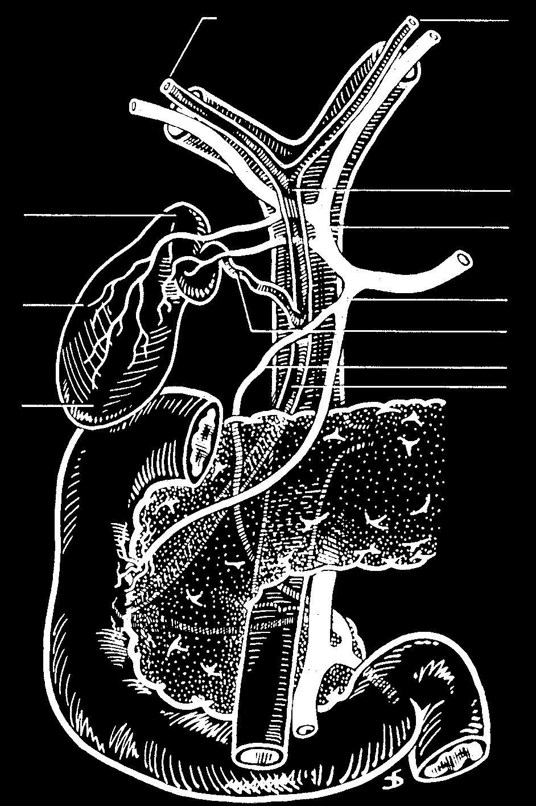
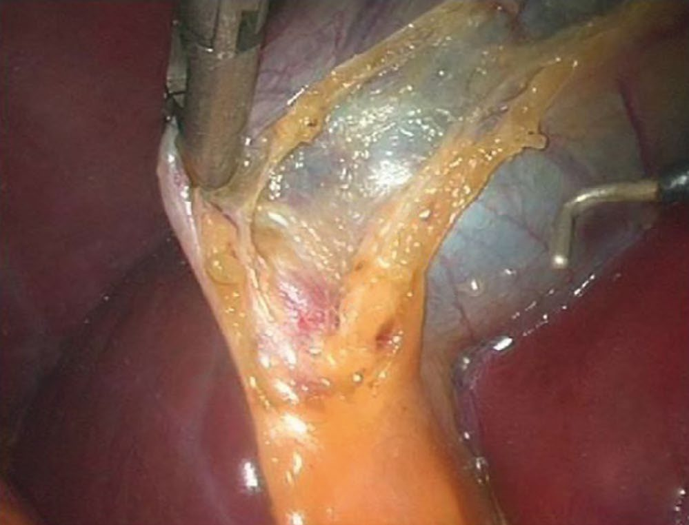
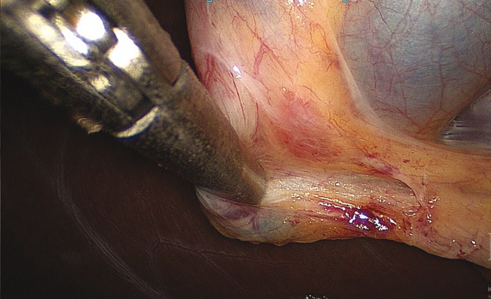

Biliary Anatomy and Physiology
Summary
- The biliary tree is the part of abdominal anatomy where variation is the rule rather than the exception: anatomical variations in the biliary and vascular structures of the hepatoduodenal ligament occur in up to 30% of patients, and safe biliary surgery depends on knowing both the normal arrangement and the common variants [1].
- This page covers the extrahepatic ducts and their vasculature, the triangle of Calot and what runs through it, the gallbladder wall and why its absent submucosa matters for cancer staging, and the hormonal control of bile flow.
- The single most consequential fact for a cholecystectomy is that the cystic artery arises from the right hepatic artery within the triangle of Calot, which is why that artery is at risk in the operation [1].
Definition
The common hepatic duct is the segment of extrahepatic bile duct below the biliary bifurcation and above the cystic duct insertion [1]. Because the cystic duct inserts so variably, it is often more practical to divide the common duct into proximal (within 2 cm of the bifurcation) distal, coursing behind the duodenum and intrapancreatic, and mid-CBD between the two [1].
The triangle of Calot is bordered by the cystic duct, the common hepatic duct and the edge of the liver [1].
Rokitansky-Aschoff sinuses are epithelial invaginations in the gallbladder wall, formed by increased gallbladder pressure [2]. Ducts of Luschka are biliary ducts lying in the gallbladder fossa that can leak after cholecystectomy [2].
Pathophysiology
The gallbladder
The gallbladder is a partially intraperitoneal structure attached to the undersurface of the liver on segments IVB and V [1]. It is 7 to 10 cm long, holds 30 to 60 mL of bile as a reservoir, and is divided into neck, infundibulum with Hartmann's pouch, body and fundus [1]. On the side attached to the liver there is no peritoneal covering; a fibrous lining known as the cystic plate occupies that space [1].
The gallbladder has no submucosa, and its mucosa is columnar epithelium [2]. That absence is not a curiosity, it is why gallbladder cancer spreads to liver segments IV and V relatively early [2].
The valves of Heister are folds of mucosa arranged in a spiral within the neck of the gallbladder, and they function to retain bile until the gallbladder contracts in response to enteric stimulation [1].
The ducts
The cystic duct ranges from 1 to 5 cm in length and drains at an acute angle into the common bile duct, with numerous variations in where it inserts along the duct's length, including into the right hepatic duct itself [1].
The common bile duct lies anterior to the hepatic arteries and the portal vein in the hepatoduodenal ligament [1]. The distal CBD courses behind the first part of the duodenum to enter a groove on the posterior surface of the superior pancreatic head before joining the pancreatic duct and ending in the ampulla; in variants the pancreatic duct may have a separate orifice [1].
Neither the common bile duct nor the common hepatic duct has peristalsis [2].
The right posterior duct has, in a small minority of patients, a lower entry point into the CBD, which makes it susceptible to injury during cholecystectomy [1].

Arterial supply
The cystic artery normally arises from the right hepatic artery, but like the cystic duct it is variable and may arise from the right hepatic, left hepatic, proper hepatic, common hepatic, gastroduodenal or superior mesenteric artery; it can pass either posterior or anterior to the CBD [1].
The cystic artery generally lies superior to the cystic duct and is usually associated with Calot's node, which provides the lymphatic drainage of the gallbladder and can be enlarged in inflammatory or neoplastic gallbladder disease [1].
The blood supply of the common hepatic duct and CBD comes from the right hepatic and cystic arteries [1]. The right hepatic artery typically passes posterior to the common hepatic duct on its way to the right lobe, crossing the duct and then passing through the triangle of Calot, where the cystic artery takes off, and where it is at risk during cholecystectomy [1]. Limiting the dissection to the right of Calot's node minimises the risk of injuring the right hepatic artery and the adjacent CBD [1].
- Below the duodenal bulb the supply is different.
- Perfusion to the inferior bile duct comes from tributaries of the posterosuperior pancreaticoduodenal and gastroduodenal arteries; these small branches coalesce into two vessels running along the CBD at the 3 and 9 o'clock positions, and they can be damaged by close dissection, leaving the duct at risk of ischaemic injury [1].
- The ABSITE Review describes the same pair as the longitudinal blood supply at the 9 and 3 o'clock positions [2].
In 20% of the population there is an accessory or replaced right hepatic artery passing through the portacaval space and ascending to the right lobe along the posterior and right lateral aspect of the CBD [1]. It can be found as a pulsatile structure palpated on the most lateral aspect of the porta during a Pringle manoeuvre, or seen on CT as a vessel passing transversely between the portal vein and IVC behind the head of the pancreas [1].


Venous, lymphatic and nerve supply
Cystic veins drain into the right branch of the portal vein, and the lymphatics lie on the right side of the common bile duct [2]. The first nodes involved in gallbladder cancer are the cystic duct nodes on the right [2].
Parasympathetic fibres come from the left (anterior) trunk of the vagus; sympathetic fibres from T7 to T10 via the splanchnic and coeliac ganglia [2].
Dimensions, course and variants of the ducts and gallbladder
- The left hepatic duct is longer than the right and dilates more readily with distal obstruction; the common hepatic duct runs 1–4 cm at about 4 mm diameter, anterior to the portal vein and right of the hepatic artery, and the cystic duct joins it at an acute angle, its proximal segment carrying the spiral valves of Heister, which have no valvular function but can make cannulation difficult [4].
- The cystic duct may be short or absent with a high union, or long and running parallel to, behind or spiralling around the common hepatic duct before joining it, sometimes as far down as the duodenum; the variants, low junction, adherence to the hepatic duct, high junction, drainage into the right hepatic duct, a long duct joining behind the duodenum, absence, and posterior or anterior crossing, are the ones whose misidentification leads to duct injury [4].
- The common bile duct is about 7–11 cm long and 5–10 mm wide, increasing slightly with age and after cholecystectomy; its supraduodenal third runs in the free edge of the hepatoduodenal ligament right of the artery and anterior to the vein, the retroduodenal third curves behind the first part of the duodenum diverging from the vein and arteries, and the pancreatic third runs in a groove behind or through the head of the pancreas before passing obliquely 1–2 cm within the duodenal wall to the ampulla of Vater about 10 cm beyond the pylorus [4].
- In about 70% of people the bile and pancreatic ducts unite outside the duodenal wall and cross it as one duct, in about 20% they join within the wall with a short or absent common channel but a shared opening, and in about 10% they open separately; the sphincter of Oddi is a thick coat of circular smooth muscle around the duct at the ampulla, whereas the extrahepatic ducts themselves have columnar mucosa with mucous glands concentrated in the common duct, scant smooth muscle in fibro-areolar tissue and no distinct muscle layer [4].
- The classic description of the biliary tree and its arteries applies in only about a third of patients: the gallbladder may be intrahepatic (associated with more stones), rudimentary, left-sided (often draining into the left hepatic or common duct), retrodisplaced, transverse or "floating" on a mesentery; isolated congenital absence has an incidence of 0.03% and must not be diagnosed until an intrahepatic or anomalous position is excluded; duplication with two cavities and two cystic ducts occurs in about 1 in 4000, usually with each duct draining independently and less often merging before the common duct, and matters only when disease affects one or both; and an accessory right hepatic duct occurs in about 5% [4].
- Arterial anomalies occur in up to 50%: up to 20% have a replaced right hepatic artery from the superior mesenteric, about 5% two right hepatic arteries (one accessory from the superior mesenteric), the right hepatic artery may run anterior to the common duct or parallel to the cystic duct or in the gallbladder mesentery where it is vulnerable, and the cystic artery arises from the right hepatic in about 80–90% but may come from the left hepatic, common hepatic, gastroduodenal or superior mesenteric arteries, sometimes as two vessels [4].
- Lund's (Mascagni's) node, often called Calot's node, overlies the insertion of the cystic artery into the gallbladder wall; the gallbladder's parasympathetic fibres from the hepatic vagal branches also carry substance P, somatostatin, enkephalins and VIP, while sympathetic and sensory fibres through the coeliac plexus control relaxation and mediate the pain of biliary colic, and the duct's nerve supply is the same with fibre density rising toward the sphincter [4].
Clinical features
The gallbladder fills because the sphincter of Oddi contracts at the ampulla of Vater [2]. Two drugs act on it in opposite directions: morphine contracts the sphincter of Oddi, and glucagon relaxes it [2].
- CCK is the hormone that empties the gallbladder.
- It is produced by the I cells of the duodenum, its secretion is stimulated by amino acids and fatty acid chains, and its response is gallbladder contraction with relaxation of the sphincter of Oddi, together with increased pancreatic enzyme secretion from acinar cells [5].
- Sabiston describes CCK as secreted by the intestinal mucosa, inducing biliary tree secretion and gallbladder wall contraction and so augmenting excretion of bile into the intestine [1].
Secretin, by contrast, is produced by the S cells of the duodenum, stimulated by fat, bile and a pH below 4.0, and increases pancreatic bicarbonate release from ductal cells [5]. The highest concentration of CCK and secretin cells is in the duodenum [2].
Bile excretion is increased by CCK, secretin and vagal input, and decreased by somatostatin and sympathetic stimulation; CCK produces a constant, steady, tonic gallbladder contraction [2].
Aetiology
The gallbladder concentrates bile by active resorption of sodium chloride and passive resorption of water [2]. Sabiston describes the same osmotic process driven by active sodium transport, and its consequence: as sodium and water are absorbed the chemical composition of bile changes, cholesterol and calcium concentrations rise, the stability of phospholipid-cholesterol vesicles falls, and that reduced stability predisposes to nucleation [1].
Bile salt reabsorption is divided between three sites: active resorption of conjugated bile salts in the terminal ileum accounts for 50%, passive resorption of non-conjugated bile salts in the small intestine 45%, and the colon 5% [2].
Bile is secreted 80% by hepatocytes and 20% by bile canalicular cells, and postprandial gallbladder emptying is maximal at 2 hours, at 80% [2].
The essential functions of bile are fat-soluble vitamin absorption, essential fat absorption, and excretion of bilirubin and cholesterol [2].
Bile production, gallbladder absorption and motor control
- A normal adult produces 500–1000 mL of bile a day; vagal hepatic branches increase secretion and coeliac sympathetics decrease it, and acid, partly digested protein and fatty acids entering the duodenum release secretin from S cells and increase bile flow [4].
- Sodium, potassium, calcium and chloride are at plasma concentration in bile, hepatic bile is neutral or slightly alkaline (a high-protein diet shifts it acidic), the primary salts cholate and chenodeoxycholate are conjugated to taurine and glycine and act as anions balanced by sodium, about 80% of secreted conjugated acids are reabsorbed in the terminal ileum, the remainder is dehydroxylated by bacteria to deoxycholate and lithocholate and absorbed in the colon, so that about 95% of the pool recirculates and only 5% is lost in stool; bilirubin (orange-yellow) and its oxidised form biliverdin (green) are present at 100 times plasma concentration, conjugated bilirubin can appear in urine as urobilinogen and the remainder becomes stercobilinogen (brown) in the intestine [4].
- In fasting about 80% of hepatic bile is stored in the gallbladder, whose mucosa has the greatest absorptive power per unit area of any structure in the body, absorbing sodium, chloride and water against gradients to concentrate bile up to 10-fold, one of the mechanisms, with gradual relaxation and periodic emptying, that keeps biliary pressure low [4].
- The mucosal glands of the infundibulum and neck secrete mucus glycoproteins that protect the mucosa and ease passage through the cystic duct, and produce the colourless "white bile" of hydrops when cystic duct obstruction excludes pigment; hydrogen-ion secretion acidifies stored bile and prevents precipitation of calcium salts that could nucleate stones [4].
- Filling depends on tonic sphincter contraction creating a small gradient between duct and gallbladder; in phase II of the interdigestive migrating motor complex the gallbladder repeatedly empties small volumes under motilin, and after a meal CCK from duodenal enteroendocrine cells drives contraction with synchronised sphincter relaxation, emptying 50–70% of contents in 30–40 minutes and refilling over 60–90 minutes as CCK falls [4].
- CCK, released by acid, fat and amino acids in the duodenum and proximal jejunum, has a plasma half-life of 2–3 minutes, is cleared by liver and kidney, acts directly on gallbladder smooth muscle, relaxes the terminal duct, sphincter and duodenum, and is partly mediated by cholinergic vagal neurons, so vagotomised patients respond less and develop a larger gallbladder; cholinergic agents including nicotine and caffeine contract the gallbladder, atropine relaxes it, antral distension contracts the gallbladder and relaxes the sphincter, and VIP and somatostatin are potent inhibitors, explaining the high stone incidence with somatostatin analogues and somatostatinomas [4].
- The sphincter of Oddi spans 4–6 mm with a basal pressure about 13 mmHg above duodenal pressure and phasic contractions about four per minute at 12–140 mmHg, regulated by interstitial cells of Cajal; CCK, glucagon and secretin lower its basal pressure and phasic amplitude, and pharmacological glucagon can be used to relax it for diagnostic studies [4].
Diagnosis
Normal duct and wall dimensions [2]:
| Structure | Normal |
|---|---|
| Common bile duct | 6 mm or less (10 mm or less after cholecystectomy) |
| Gallbladder wall | 4 mm or less |
| Pancreatic duct | 4 mm or less |
The patterns of biliary-pancreatic duct junction are separate CBD and pancreatic duct entry; ducts joining at the ampulla; ducts joining before the ampulla; and the pancreatic duct entering the CBD [1].
Diagnostic modalities for the biliary tree
- Oral cholecystography, introduced by Graham and Cole in 1924, was the mainstay for decades before scintigraphy, transhepatic and endoscopic cholangiography, ultrasound, CT and MRI [4].
- A raised white count suggests acute cholecystitis, and with raised bilirubin, alkaline phosphatase and transaminases suggests cholangitis; cholestasis raises conjugated bilirubin and alkaline phosphatase with possibly no transaminitis and points to duct stones, stricture or cholangiocarcinoma, while blood tests are often normal in simple symptomatic stones, colic or chronic cholecystitis [4].
- Transabdominal ultrasound is the initial investigation, showing stones with over 90% sensitivity and specificity as acoustically dense, shadowing, mobile foci (polyps may shadow but do not move), with wall thickening, pericholecystic fluid and a sonographic Murphy's sign in acute cholecystitis, a large thin-walled gallbladder with neck obstruction and a contracted thick-walled one in chronic disease; it sees the extrahepatic ducts well except the retroduodenal portion where small stones lodge, defines the level and often the cause of obstruction above that point, and assesses portal vein invasion in periampullary tumours, but is operator-dependent and degraded by obesity, ascites and bowel gas [4].
- CT is inferior for stones but as sensitive for acute cholecystitis, and its main roles are defining the extrahepatic tree and adjacent structures, alternative diagnoses and suspected malignancy [4].
- HIDA scintigraphy uses technetium-labelled iminodiacetic acid taken up by the liver within 10 minutes and visualising gallbladder, ducts and duodenum within 60 minutes in fasting subjects; non-visualisation of the gallbladder with prompt duct and duodenal filling indicates cystic duct obstruction and is about 95% sensitive and specific for acute cholecystitis, false positives arising in the non-fasting state, parenteral nutrition, stasis, recent narcotics and alcoholism; delayed or absent duodenal filling indicates ampullary obstruction, leaks after biliary surgery can be confirmed and localised, and an ejection fraction below 35% with or without CCK provocation is considered abnormal in biliary dyskinesia, though its clinical meaning is debated [4].
- MRCP has 95% sensitivity and 89% specificity for duct stones and in many centres has become the preferred imaging of biliary and pancreatic duct pathology, reserving ERCP for therapy; ERCP with a side-viewing endoscope cannulates the duct in over 90% in expert hands, allows sphincterotomy, stone extraction and stricture brushings, and causes pancreatitis in about 3.5% with rare bleeding, perforation or cholangitis [4].
- Intraductal choledochoscopy through the ERCP scope permits lithotripsy, directed extraction in high-risk patients and visualisation and sampling of suspicious lesions, with perforation, minor bleeding and cholangitis described; EUS with a 30° radial or linear scope visualises the retroduodenal duct, is less sensitive than ERCP for stones but avoids cannulation, evaluates tumours behind the duodenum and their resectability, and permits fine-needle aspiration, injection and drainage; and percutaneous transhepatic cholangiography, used when endoscopic access fails, defines the tree above a stricture or tumour and allows sampling, drainage and stenting at the cost of bleeding, cholangitis, bile leak and catheter problems [4].
Thresholds and severity
A common bile duct above 6 mm is abnormal, but the threshold rises to 10 mm after cholecystectomy [2], the commonest source of over-called duct dilatation on ultrasound.
Anatomical variation occurs in up to 30% of patients [1], which is the argument for identifying structures rather than assuming them at every cholecystectomy.
Treatment and Management
After cholecystectomy the total bile salt pool falls [2].
The anatomical facts above translate into three operative rules at cholecystectomy: keep the dissection to the right of Calot's node to protect the right hepatic artery and CBD [1]; avoid close dissection along the CBD, which would strip the 3 and 9 o'clock vessels and devascularise it [1]; and expect the cystic duct to insert somewhere other than where it usually does [1].
Procedural interventions
The Pringle manoeuvre doubles as a diagnostic test for a replaced right hepatic artery: a pulsatile structure on the most lateral aspect of the porta identifies it [1].
At ERCP, the longitudinal blood supply of the duct runs at the 3 and 9 o'clock positions [2].
Complications
Ducts of Luschka in the gallbladder fossa are a recognised source of bile leak after cholecystectomy [2].
Ischaemic injury to the bile duct follows damage to the 3 and 9 o'clock vessels during close dissection [1].
A low-inserting right posterior sectoral duct is susceptible to injury during cholecystectomy [1], and the right hepatic artery is at risk where it crosses the triangle of Calot [1].
Outcomes
The consequence of the gallbladder having no submucosa is a staging one: gallbladder cancer reaches liver segments IV and V early [2], which is why the depth of invasion rather than the size of the tumour governs whether cholecystectomy alone suffices, set out on the Biliary Strictures and Cholangiocarcinoma page.
The consequence of 30% anatomical variation is that biliary injury remains a technical rather than a knowledge problem: the variants are described and predictable, and the operative rules above exist to accommodate them [1].
References
- Sabiston Textbook of Surgery, 22nd ed., Ch. 88 Biliary System
- The ABSITE Review, 2022, Ch. 32 Biliary System
- Sabiston Textbook of Surgery, 22nd ed., Ch. 11 Advances and Training Considerations in Laparoscopic Surgery
- Schwartz's Principles of Surgery, 11th ed., Ch. 32, Gallbladder and the Extrahepatic Biliary System
- The ABSITE Review, 2022, Ch. 28 Gastrointestinal Hormones